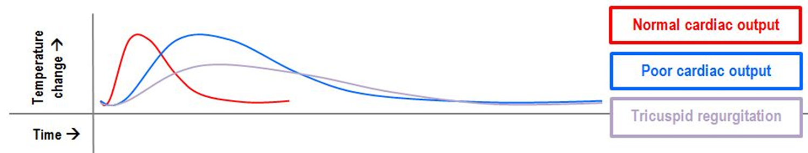
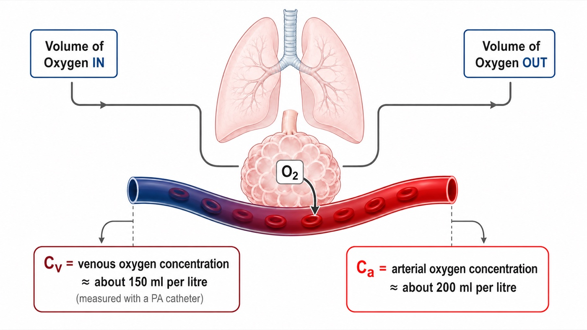
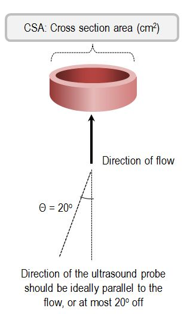
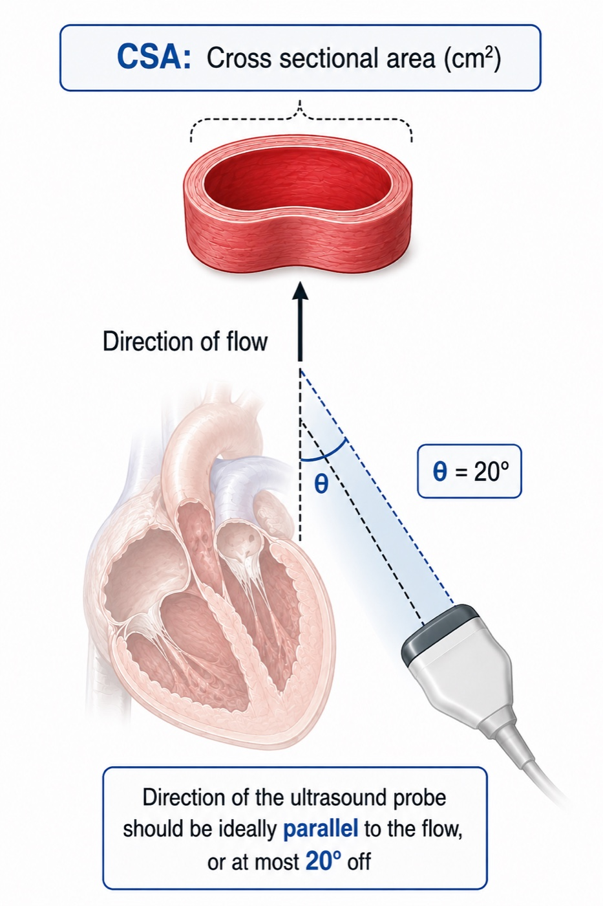
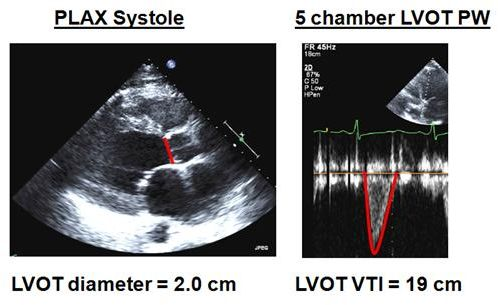

Module I16
Measuring cardiac output
Cardiac output has appeared in every equation in this pathway. It is the flow term in all four interfaces and the common denominator that ties them into one circulation, as Module I1 argued. Every one of those arguments assumed the number was known. This module takes that assumption apart.
Module N7 T4 gave the working version: cold in the proximal port, a thermistor at the tip, output inversely proportional to the area under the washout curve, three measurements averaged at end expiration, unreliable in shunt and in tricuspid regurgitation. All of that is true and none of it is enough. A clinician who knows only that thermodilution is "unreliable" in tricuspid regurgitation cannot say whether the displayed 3.2 L/min is too high or too low, and has no basis for choosing what to do instead. The difference between the Novice treatment and this one is the difference between a list of conditions and the direction and size of the error each one produces.
Three methods are in routine use and they fail in unrelated ways, which is the most useful thing about having three. Thermodilution measures flow directly and assumes all the indicator you injected passes the detector once. Fick infers flow from an oxygen mass balance and assumes you know how much oxygen the patient is consuming. Doppler echocardiography measures a stroke volume geometrically and assumes a circular outflow tract whose diameter you measured correctly. When two agree the number is probably real, and when they disagree the disagreement localizes the broken assumption.
Indicator dilution, and why the area under the curve is the answer
All dilution methods rest on one conservation statement. Put a known quantity of indicator into a stream, let it mix, and measure its concentration downstream until it has all gone past. What went in equals what came out, which is flow multiplied by concentration integrated over time.
Read that inverse relationship physically. The same quantity of indicator must appear in the curve however fast the blood moves. A fast stream sweeps it past quickly, so concentration peaks early and falls fast and the area is small. A slow stream drags it past over a longer interval at a lower peak, and the area is large. Peak height tells you nothing on its own. Only the area carries the answer.
Thermodilution substitutes cold for a chemical indicator, which is what makes it practical: no blood is withdrawn and no arterial puncture is needed. Fegler established the thermal method in animals in 1954 and Ganz and colleagues brought it to the bedside in 1971, on the flow-directed balloon-tipped catheter Swan, Ganz and colleagues had described in 1970. The quantity of indicator is here a quantity of cold: injected volume multiplied by temperature difference, corrected for the different densities and specific heats of saline and blood. That is the Stewart-Hamilton relationship in the form the monitor computes.
Everything that can go wrong is visible there. The numerator is what the monitor believes was injected, the denominator is what the thermistor actually saw, and the measurement is trustworthy exactly to the extent that those describe the same bolus.
The computation constant, and what it encodes
K2 is the term clinicians enter and rarely think about, and it is not a fudge factor. Injectate does not arrive in the right atrium at the temperature it left the syringe: it warms travelling down a lumen surrounded by blood at 37 degrees, by an amount that depends on the length, wall thickness and volume of that lumen and on how fast the bolus is pushed. The constant is therefore specific to the catheter model, the injectate volume and the temperature range, which is why manufacturers publish a table rather than a number. Two consequences follow. Selecting the wrong catheter model biases every subsequent measurement, and nothing about the displayed curve looks abnormal. And the constant assumes a technique, since a slow injection gives the bolus more time to warm. Technique sits inside the equation, not next to it.
What the computer does to the tail of the curve
The integral runs from injection until the indicator has all passed, which never quite happens: some cooled blood returns through the systemic circuit and reaches the pulmonary artery a second time. Recirculation adds a slow hump to the tail, and integrating it would inflate the denominator and understate output. Every commercial computer therefore truncates the integration and extrapolates.
![An idealized thermodilution curve plotted as decreasing temperature against time. Labels mark the baseline before injection, the curve onset, a rapid upslope to a peak, a gradual downslope, and vertical markers at 80 percent and 30 percent of the peak on the downslope, with the region beyond labelled extrapolated area. The caption beneath explains that the computer begins integrating at the instant of injection and stops when the exponential decay reaches about 30 percent of peak, then extrapolates the remaining decay to baseline so that recirculation artifact is minimized.](img/hemodynamics-module-v2022-full_slide371_7c351f89.png)
That extrapolation is the hinge on which several error mechanisms below turn, because it assumes a single exponential generated by one pass of one bolus. Recirculation across a valve, a wandering baseline temperature or a second slug of cold arriving late all make the tail non-exponential, and the extrapolation has no way to know it is wrong. Hence the habit of reading the curve and not only the number beneath it.

Technique is the dominant error term, and it is directional
Before any pathology is invoked, the largest source of scatter is the operator. That is a statement about the equation rather than a criticism: the numerator is a set of numbers typed into a monitor, the denominator is a physical event, and every discrepancy between them lands on the answer. The skill is not memorizing which errors read high but deriving the direction in the moment.
Work one. The monitor has been told 10 mL but only 8 mL is delivered. It computes the numerator with V equal to 10 mL, but only 80 percent of that cold arrived, so the thermistor records a shallower curve and the denominator is smaller. A fixed numerator over a smaller denominator gives a larger quotient: an under-delivered bolus reads falsely high. Every other technique error resolves the same way, by asking whether the monitor over- or underestimated the cold that reached the thermistor.
| Technique error | What it does to the equation | Measured cardiac output |
|---|---|---|
| Less injectate delivered than programmed | Numerator held at programmed V while the measured area falls | Falsely high |
| More injectate delivered than programmed | More cold arrives than the numerator accounts for | Falsely low |
| Injectate warmer than programmed | Numerator overstates the thermal deficit and the real area is smaller | Falsely high |
| Injectate colder than programmed | More cold arrives than the numerator accounts for | Falsely low |
| Slow or hesitant injection | Cold is dispersed and partly absorbed before the thermistor, blunting the curve | Falsely high, and imprecise |
| Wrong catheter model, so wrong computation constant | K2 misstates warming in transit and dead space | Systematically wrong, direction set by the constant |
| Balloon left inflated | Flow past the thermistor is not the flow that received the bolus | Unpredictable, and unsafe |
| Rapid intravenous infusion running concurrently | Baseline pulmonary artery temperature drifts, so there is no stable baseline to integrate from | Unpredictable, sometimes grossly |
Three rows deserve expansion because the received wisdom about them is incomplete.
Iced versus room temperature injectate. The instinct is that colder is better, and a larger temperature difference does give a bigger signal, which matters most when the curve is shallow. But Stetz and colleagues, analysing fourteen published comparison studies, found no difference in measurement quality between rapid injection of iced and of room temperature indicator, and Nishikawa and Dohi recommend 10 mL of room temperature injectate for adults on the practical ground that iced injectate warms from the moment it leaves the ice bath. A controlled room temperature bolus beats an uncontrolled cold one.
Rapid concurrent volume infusion. Wetzel and Latson described major errors during rapid volume infusion, and the mechanism is baseline drift rather than anything to do with the bolus. The denominator is an area measured against a pulmonary artery temperature the algorithm assumes is stable. If cool fluid is pouring in through another line that baseline is moving, and an area computed against a sloping reference bears no defined relationship to flow. Pause the infusion, let the temperature settle, then measure.
What counts as a change. The convention of three to five injections with outliers discarded rests on a quantitative result. Stetz and colleagues concluded that with three measurements per determination, a difference of 12 to 15 percent, averaging 13 percent, is required before a change is clinically significant, rising to 20 to 26 percent for single measurements. An output moving from 4.0 to 4.4 L/min after an intervention has moved 10 percent, which is inside the noise of the method. Treating that as a response is treating measurement error.
When the physiology, not the technique, breaks the measurement
Intracardiac shunt
Shunt produces two different errors that happen to point the same way, and conflating them causes confusion.
A left to right shunt does not break the measurement at all. The thermistor sits in the pulmonary artery, so it measures pulmonary blood flow, Qp, accurately. But pulmonary flow now exceeds systemic flow, Qs, by the shunt volume, and it is systemic output that determines oxygen delivery. Thermodilution has answered a real question, and it is the wrong question. It overestimates systemic output by the shunt flow.
A right to left shunt breaks the measurement itself. Some injectate crosses to the left heart and never passes the thermistor, so less indicator arrives than the numerator accounts for, the area shrinks, and the curve returns to baseline early, which the algorithm reads as fast washout. It also reads high, but by the mechanism of an under-delivered bolus rather than by measuring a different circuit. The remedies therefore differ. Right to left makes thermodilution unusable and the answer is Fick. Left to right makes it accurate but non-systemic, and the answer is to separate pulmonary from systemic flow using oximetry samples along the right heart to find the saturation step-up.
Tricuspid regurgitation, where the literature genuinely disagrees
A regurgitant valve lets part of each bolus wash back into the right atrium and cross again later, so indicator arrives at the thermistor in installments rather than as a single pass. The curve becomes low, broad and long tailed, which is the grey curve above, and that shape is precisely what a single-exponential extrapolation was not built for.
First principles give two competing predictions, which is why the empirical literature is split. Spreading the same cold over a longer interval enlarges the true area, driving the output down. But if the smeared tail crosses the 30 percent termination threshold early, the extrapolation truncates a real part of the curve and drives it up.
The three studies worth knowing report exactly that spread. Cigarroa and colleagues (1989) paired thermodilution with Fick or indocyanine green in thirty patients. Without regurgitation, agreement was excellent, at 4.95 (S.D. +/- 1.19) against 4.90 (S.D. +/- 1.11 L/min). In the seventeen with regurgitation, thermodilution was consistently lower, at 4.22 (S.D. +/- 1.45) against 4.99 (S.D. +/- 1.67 L/min). That study is the origin of the underestimation teaching. Balik and colleagues (2002) compared thermodilution with simultaneous transoesophageal Doppler in twenty-seven ventilated patients by regurgitation grade, and the difference widened from 0.5 (S.D. +/- 1.1 L/min) with no or first degree, through 0.8 (S.D. +/- 2.0) with second degree, to 1.9 (S.D. +/- 2.3) with third degree, while correlation fell from 0.96 to 0.69. Note what widens fastest: the limits, not just the bias. Hoeper and colleagues (1999) made 105 paired thermodilution and Fick measurements in thirty-five patients with pulmonary hypertension and found a mean difference of plus 0.01 (S.D. +/- 1.1 L/min), unaffected by severe regurgitation or by low output.
Furthermore, a recent systematic review and meta-analysis strengthens the case against treating tricuspid regurgitation as an automatic failure of thermodilution. Abualsaud and colleagues identified eight studies comparing thermodilution with direct Fick in patients with and without tricuspid regurgitation, four of which were suitable for pooled analysis. Moderate to severe regurgitation did not meaningfully alter the correlation between the two methods compared with mild or absent regurgitation. The finding does not prove equivalence: the studies were heterogeneous, carried substantial risk of bias, and correlation does not establish agreement or precision. What it does challenge is the assumption that significant tricuspid regurgitation, by itself, makes thermodilution intrinsically unreliable.
So the defensible rule is not "thermodilution underestimates in tricuspid regurgitation," and probably not even "thermodilution is unreliable in tricuspid regurgitation." Regurgitation can distort the indicator-dilution curve and may degrade precision, particularly when severe, but a predictable directional bias has not been consistently demonstrated. Significant tricuspid regurgitation should therefore prompt careful curve inspection, repeated measurements and corroboration of a discordant value rather than automatic rejection of thermodilution. When resolving a clinically important disagreement between methods, direct Fick with measured oxygen consumption remains the arbiter.
Arrhythmia
Beat to beat variation in stroke volume is a precision problem, not a bias. A bolus injected during a run of short cycles samples a period of low stroke volume, one injected during long cycles samples the opposite, and neither is wrong about the interval it covered. The error is that the interval is short, so the response is to average more injections across more of the rhythm and to widen the least significant change accordingly. What atrial fibrillation does not do is produce a predictable directional error, so "the number is high because she is in atrial fibrillation" is not a legitimate inference in either direction.
The ventilatory cycle, and a real disagreement about what to do
Positive pressure ventilation makes right ventricular output vary within every breath, for the reasons Module I12 works through beat by beat, and a single measurement samples whatever part of that cycle it fell in.
Jansen and colleagues quantified this in ventilated pigs, taking fifty measurements at random points in the cycle at each of four levels of positive end-expiratory pressure. The maximum difference between randomly timed measurements was 40 percent on the left side of the heart and 70 percent on the right. Sorted by respiratory phase the variation proved systematic with only a small random component, which is the important part: the scatter is not noise, it is a reproducible waveform sampled at random. Their second finding is the uncomfortable one. On the left side end expiration was a satisfactory moment for estimating mean output, but on the right side, where a pulmonary artery catheter measures, no single moment held up across changing conditions, and applied positive end-expiratory pressure was one of the conditions that spoiled it.
Stevens and colleagues asked the clinical version in thirty-two patients, randomising injections to peak inspiration, end exhalation or random timing. Peak inspiration and end exhalation both gave much smaller standard deviations than random timing, and they recommended end exhalation. Nishikawa and Dohi recommend instead injecting at evenly spaced intervals across the ventilation cycle. Both are right and they answer different questions. End-expiratory injection is the most reproducible, always sampling the same point on the same waveform, which is what trending over hours needs. Evenly spaced injections come closest to the true cycle-averaged output, which is what an absolute value fed into a pulmonary vascular resistance or oxygen delivery calculation needs. What neither permits is injecting whenever the syringe is ready. This is the same principle developed in Module I12 (opens in a new tab) and Module I13 (opens in a new tab): respiration is not random noise superimposed on the cardiovascular measurement but a systematic cardiovascular perturbation. Standardizing respiratory phase improves reproducibility precisely because it prevents the operator from sampling different points on that physiologic oscillation.
Low output states
Everything above worsens as flow falls. A low output gives a shallow prolonged curve, so the signal is small relative to thermistor noise and baseline drift, more of the area falls in the extrapolated region, and the injectate spends longer in the right heart warming up. Low output is also where the number changes management most, which is a reason to corroborate rather than repeat.
The Fick principle
Fick's statement is a general mass balance: the uptake or release of a substance by an organ equals blood flow through that organ multiplied by the arteriovenous difference in its concentration. Applied to whole-body oxygen consumption, the oxygen used by the tissues each minute equals systemic blood flow multiplied by the oxygen extracted from each unit of blood. At steady state, the same balance can be viewed across the lungs: the oxygen added to pulmonary blood each minute equals the oxygen consumed by the body.
![A schematic of the Fick principle drawn over a silhouette of a pig. Two horizontal channels represent the airway, labelled volume of oxygen in on the left and volume of oxygen out on the right, with an arrow labelled O2 passing downward into a horizontal bar representing the bloodstream. The bloodstream bar is dark red on the left and bright red on the right. The dark left end is labelled Cv, venous oxygen concentration, about 150 mL per litre, measured with a PA catheter, and the bright right end is labelled Ca, arterial oxygen concentration, about 200 mL per litre.](img/hemodynamics-module-v2022-full_slide378_14476654.jpg)

CaO2 = (1.34 × Hb × SaO2) + (0.003 × PaO2)CO, cardiac output (L/min); V̇O2, oxygen consumption (mL/min); CaO2 and CvO2, arterial and mixed venous oxygen content (mL O2 per dL, computed identically from the respective saturation); Hb, hemoglobin (g/dL); SaO2, arterial saturation as a fraction; 1.34, mL of oxygen carried per g of saturated hemoglobin; 0.003, mL dissolved per dL per mmHg. Content is expressed per dL, so the difference must be multiplied by 10 to give mL per litre before dividing into V̇O2.
That last clause is where most arithmetic errors are born, so work an example through. Oxygen consumption 250 mL/min, hemoglobin 10 g/dL, arterial saturation 98 percent, mixed venous saturation 68 percent, ignoring dissolved oxygen, which contributes about 0.3 mL/dL and nearly cancels in the difference.
CvO2 = 1.34 × 10 × 0.68 = 9.1 mL O2/dL
CaO2 − CvO2 = 4.0 mL O2/dL = 40.2 mL O2/L
CO = 250 ÷ 40.2 = 6.2 L/minAn arteriovenous content difference near 4 mL O2 per dL, or 40 mL per litre, is the normal value and is worth carrying as an anchor. It corresponds to an oxygen extraction ratio of roughly 30 percent.
Direct and indirect Fick are not variants of one method
Direct Fick measures oxygen consumption, by Douglas bag or metabolic cart, and with simultaneous arterial and mixed venous sampling it is the reference standard and the arbiter when thermodilution is in doubt. It is also slow, needs equipment most units do not keep at the bedside, and is corrupted by any leak in the circuit, which is why it is rarely done. Indirect Fick substitutes an assumed consumption from a population formula: 125 mL/min/m2 multiplied by body surface area, the LaFarge, Dehmer or Bergstra equations, or a flat 250 mL/min. This is what a catheterization report means by "Fick cardiac output" without qualification.
Narang and colleagues measured resting consumption by Douglas bag in 535 adults undergoing right heart catheterization and compared it with three published formulae. Measured consumption averaged 241 (S.D. +/- 57) mL/min. All three formulae differed significantly from it, with median absolute differences of 28 to 38 mL/min, and estimated and measured values differed by more than 25 percent in 17 to 25 percent of patients. The discrepancy was worse in severe obesity, above a body mass index of 40, and was unaffected by sex or age.
Consumption is the numerator, so a proportional error in the estimate becomes the same proportional error in the output with no attenuation, and the direction is predictable from the patient rather than from the formula. A deeply sedated, paralysed, cooled, ventilated patient consumes less than the population estimate, because the work of breathing is abolished and skeletal muscle is silent, so the numerator is too big and indirect Fick overestimates. A febrile, agitated, shivering or thyrotoxic patient consumes more, so the numerator is too small and it underestimates. Severe pneumonia adds an error that degrades direct Fick too: inflamed lung consumes oxygen drawn from alveolar gas that never appears as a systemic arteriovenous difference, so uptake measured at the mouth exceeds what the content difference accounts for and the output reads too high. Several of these can coexist in one patient pulling opposite ways. That is the real case against indirect Fick in critical care: not that the formulae are badly fitted, but that the intensive care population is furthest from the resting adults they were fitted on.
The denominator, and why high output is the hard case
The content difference sits in the denominator, so the fractional error in the output is roughly the fractional error in consumption plus the fractional error in the content difference. The second term behaves badly whenever the difference is small, because the same absolute sampling error is a larger fraction of it.
Work it. In the example above the content difference was 40.2 mL/L and the output 6.2 L/min. Misread the venous saturation by two points, at 70 rather than 68 percent, and the difference becomes 37.5 mL/L and the output 6.7 L/min, an error of 7 percent. Now take a hyperdynamic septic patient with the same hemoglobin and arterial saturation but a mixed venous saturation of 85 percent. The content difference is 17.4 mL/L and the output 14.4 L/min, and the same two-point error now gives 14.7 mL/L and 17.0 L/min, an error of 18 percent. Nothing changed about the sample. That is why Fick is least trustworthy in high-output states, and why an intracardiac shunt, an arteriovenous dialysis fistula or any other source of arterialized blood in the venous sample is so damaging: each raises the mixed venous saturation, narrows the denominator and inflates the output without touching the flow.
The venous sample is a technique, not a blood draw
The mixed venous saturation must be a genuine mixture of everything returning to the heart, which is why it comes from the distal port in the pulmonary artery, downstream of the coronary sinus and both cavae, rather than from a central line. Module I11 takes up central venous oxygen saturation as a perfusion marker in its own right, and the two are not interchangeable. Two sampling faults raise the measured saturation and therefore inflate the output: aspirating too quickly draws oxygenated blood back across the pulmonary capillary bed, and sampling with the balloon inflated or from a catheter that has migrated into a permanent wedge draws pulmonary capillary blood outright. Draw slowly, balloon down, after confirming a pulmonary artery waveform.
What happens when the two methods are compared
The disagreement between Fick and thermodilution looks contradictory across studies until you notice that they are not comparing the same thing. What decides the answer is whether oxygen consumption was measured or assumed.
Hoeper and colleagues, in the pulmonary hypertension study above, found a mean difference between thermodilution and Fick of plus 0.01 (S.D. +/- 1.1 L/min) across 105 paired measurements, holding even in severe tricuspid regurgitation and low output.
Opotowsky and colleagues asked the same question at scale against estimated Fick. In more than 15,000 adults undergoing right heart catheterization, 12,232 in the Veterans Affairs Clinical Assessment, Reporting and Tracking cohort and 3,391 at Vanderbilt, thermodilution and estimated Fick cardiac index correlated only modestly, at r equal to 0.65. Mean difference was negligible at minus 0.02 L/min/m2, but the 95 percent limits of agreement ran from minus 1.3 to plus 1.3 L/min/m2, which is minus 50 to plus 49 percent. The methods differed by more than 20 percent in 38 percent of patients.
The study then did something agreement statistics cannot: it asked which number was right, using survival as the referee. A low thermodilution index predicted mortality more strongly than a low estimated Fick index at both 90 days and one year. Where the two disagreed, a low thermodilution index with a normal estimated Fick index carried higher one-year mortality than normal by both methods, 15.4 against 12.3 percent, whereas a normal thermodilution index with a low estimated Fick index carried no excess risk at all.
So the correct statement is narrower than the one usually taught. Thermodilution and direct Fick agree closely. Thermodilution and estimated Fick do not, and where they diverge the fault lies with the assumed consumption rather than with the dilution curve. A report quoting a "Fick cardiac output" is not interpretable until you know which kind it was, and in most laboratories it is the estimated kind.
Cardiac output by echocardiography
Echocardiography abandons both indicator dilution and oxygen balance and measures a volume geometrically. Picture the blood ejected through the left ventricular outflow tract during one systole as a cylinder. Its cross-sectional area is that of the outflow tract, and its length is the distance a parcel of blood travels during that systole, which is what a velocity integrated over the ejection period gives. Multiply for stroke volume, multiply by heart rate for output.
SV = CSA × VTI
CO = SV × HRCSA, cross-sectional area of the left ventricular outflow tract (cm2); d, outflow tract diameter (cm); r, its radius; VTI, velocity time integral, the area under the pulsed wave Doppler velocity envelope for one systole (cm); SV, stroke volume (mL, since 1 cm3 equals 1 mL); HR, heart rate.
The cross-sectional area is where the error lives
The diameter is measured in the parasternal long axis view at mid systole with the aortic leaflets fully open, from the junction of the aortic leaflet with the septal endocardium to the junction with the anterior mitral leaflet posteriorly, inner edge to inner edge. It is one linear measurement, and it is then squared.
Squaring is the whole problem. An error of 0.2 cm sounds trivial on a structure 2 cm across, and it is a 10 percent error in the diameter. A diameter of 2.0 cm gives an area of 3.14 cm2, while 1.8 cm gives 2.54 cm2. With the same velocity time integral of 19 cm the stroke volumes are 59.7 and 48.3 mL, so at a heart rate of 100 the outputs are 6.0 and 4.8 L/min. Two millimetres of caliper placement has moved the same patient from a normal output to one that would prompt an inotrope, and no other single measurement in hemodynamics carries that leverage. So spend the time on the diameter, zoomed, on a frame chosen by scrolling rather than by luck, and having measured it once do not measure it again: the outflow tract does not change over the hours of a resuscitation, so re-measuring injects fresh random error into a series meant to show a trend.
The velocity time integral
What is the Doppler machine actually measuring? Start with one red blood cell. The transducer sends ultrasound into the LVOT at a known frequency. When that wave encounters a red blood cell moving toward the transducer, the reflected ultrasound comes back at a slightly higher frequency. If the cell is moving away, it returns at a slightly lower frequency. That difference between the transmitted and returning frequencies is the Doppler shift.
The size of that shift depends on how fast the blood is moving and on how closely the ultrasound beam is aligned with its direction of travel.
The important point is what the machine does with it: because it knows the transmitted frequency, assumes the speed of sound in tissue, and knows the direction of its own beam, it converts the measured frequency shift into a velocity. Pulsed-wave Doppler is therefore essentially giving the blood passing through one small chosen region of the LVOT a continuous series of speed tickets.
But blood does not leave the ventricle at one constant speed. At the beginning of systole it accelerates, reaches a peak velocity, then decelerates as ejection ends. The spectral Doppler envelope plots that changing velocity on the vertical axis against time on the horizontal axis.
Now comes the key step. If something travels at 100 cm/s for 1 second, it travels 100 cm. More generally, distance equals velocity multiplied by time. When velocity is continuously changing, we cannot multiply one velocity by one time. Instead, we add together all of the tiny distances travelled during each tiny interval of systole. Mathematically, that is what integrating the velocity-time curve does.
That is why VTI is reported in centimetres. It is not another velocity measurement. It is the stroke distance: the distance that a column of blood would travel through the LVOT during that single ejection.
Once that idea is clear, stroke volume becomes geometry. If the LVOT has a cross-sectional area of 3 cm2 and the blood column travels 20 cm during systole, the ventricle has effectively pushed a cylinder of blood with a 3 cm2 base through a distance of 20 cm.
So the LVOT diameter tells you how wide the ejected column is. Doppler tells you how fast it moves at every instant. Integrating those velocities tells you how far it travels. And area multiplied by distance gives you the volume ejected in one beat.
There is one final consequence hidden in the Doppler equation. The machine only sees the component of blood velocity that lies along the ultrasound beam because velocity is multiplied by cosθ. Perfect alignment makes θ approach zero and cosθ approach 1. As the beam moves away from parallel, an increasing part of the true velocity becomes invisible to Doppler. That is why alignment is not merely an image-quality preference: it is part of the physics of the measurement.
Velocity is obtained with pulsed-wave Doppler because, unlike continuous-wave Doppler, it allows the operator to choose exactly where along the beam velocity is sampled. From an apical five or three chamber view, place the sample volume in the centre of the LVOT, approximately 5 mm proximal to the aortic valve, and then let the spectrum tell you whether you are actually in the right place.
A good LVOT tracing should look like smooth, mostly laminar flow. The outer border of the spectrum is bright and well defined, while the inside remains relatively dark. If the spectrum becomes broad and filled in, first ask whether the sample volume has moved too close to the valve, or the LVOT walls, where blood is beginning to accelerate and velocities become less uniform. Also check the Doppler gain, because too much gain can make a normal spectrum look artificially filled in.
The valve itself can help you judge position. If you see a clear opening click at the start of ejection, the sample volume is probably too close to the aortic valve and should be moved slightly back into the LVOT. A closing click at the end of systole, without an opening click at the beginning, is reassuring that you are close to the valve but still sampling on the ventricular side. In practice, do not chase an exact "5 mm" distance. Chase the clean LVOT signal that should come from that region. Average three to five beats in sinus rhythm and five to ten in atrial fibrillation.
![A pulsed wave Doppler spectral display from the left ventricular outflow tract with a simultaneous electrocardiogram along the top. One systolic envelope has been traced in yellow, forming a narrow deep parabola below the baseline, and the measurement panel in the upper left reports an LVOT VTI of 20.4 cm, a maximum velocity of 86.1 cm per second and a mean velocity of 58.7 cm per second at a heart rate of 49 beats per minute. Yellow arrows label the LVOT Doppler envelope and the point of aortic valve closure at the end of the envelope.](img/hemodynamics-module-v2022-full_slide409_b337cf11.png)
Once the correct spectrum has been acquired, the next source of error is where the trace is drawn. The VTI should follow the outer edge of the dense modal signal, which represents the velocity carried by the majority of red cells, rather than the faint low-density spectral dispersion extending beyond it. A useful bedside rule is: trace the jawline, not the beard. The jawline is the sharply defined dense envelope. The beard is the wispy spectral fuzz outside it. Including the beard enlarges the integrated area and can overestimate VTI, stroke volume and cardiac output.
Doppler works best when the ultrasound beam points in the same direction as blood flow. If the beam is perfectly aligned with the blood leaving the ventricle, the machine sees essentially all of its velocity. As the beam becomes more angled, it sees only part of that motion, and the measured velocity becomes progressively lower than the true velocity. That is why alignment matters so much when measuring LVOT VTI. A poor angle makes the blood look slower than it really is, so the closer the Doppler beam is to parallel with LVOT flow, the more trustworthy the measurement. This error has a predictable direction: Doppler misalignment underestimates velocity and therefore underestimates the VTI and the cardiac output derived from it. The reason comes from the cosine term in the Doppler equation. With perfect alignment the angle is 0 degrees and its cosine is 1, so essentially all of the velocity is measured. As the angle increases, the cosine becomes smaller and so does the velocity seen by the machine. At 20 degrees the cosine is 0.94, corresponding to an underestimate of about 6 percent. At 30 degrees it is 0.87, and the underestimate grows to about 13 percent. Knowing the direction of the error makes it clinically useful: when Doppler misalignment is the dominant problem, the measured VTI and derived cardiac output should be regarded as lower estimates of their true values.



SV = 3.14 × 19 = 59.7 mL
CO = 59.7 × 100 = 5,970 mL/min = 5.97 L/minOutflow tract diameter 2.0 cm, velocity time integral 19 cm, heart rate 100. Because 1 cm3 equals 1 mL, the product of an area in cm2 and a length in cm is a volume in mL with no conversion factor.
Tracking rather than measuring: the integral and the minute distance
The most useful move in bedside echocardiographic hemodynamics is to stop calculating cardiac output altogether. Cross-sectional area is a constant for a given patient, so it contributes nothing to any change in stroke volume. Every change in stroke volume is a change in the velocity time integral, and every change in output is a change in the integral or the heart rate. Blanco makes the case for tracking stroke volume with the integral itself, and output with the minute distance, defined as the integral multiplied by heart rate.
The gain is not just convenience. Dropping the area drops the only squared term, the only one whose error is amplified, so a tracked change is far more reliable than either absolute value it came from, and it works when the absolute value cannot be obtained at all. Blanco's cardiogenic shock example is exactly that case: a patient whose parasternal long axis window was too poor to measure a diameter, in whom the integral rose from 12.1 to 17.8 cm on dobutamine while heart rate rose from 104 to 111, giving a minute distance that rose from 1,248 to 1,976 cm/min, an increase of 58 percent. No cardiac output was ever calculated and the clinical question was fully answered. This is the logic Module I11 applies to the passive leg raise and the fluid challenge, where the response rather than the baseline is the measurement.
Mercado and colleagues compared 64 paired measurements in 38 ventilated intensive care patients with pulmonary artery catheters in place. Median bias was 0.2 L/min, limits of agreement minus 1.3 to plus 1.8 L/min, and percentage error 25 percent, inside the Critchley threshold, with a precision of 8 percent for the catheter and 9 percent for echocardiography. Tracking did better still: the four-quadrant concordance rate for changes in output was 94 percent. The other echocardiographic route, the biplane Simpson method, derives end-diastolic and end-systolic volumes by tracing the endocardial border in two orthogonal apical views and subtracting. It is more vulnerable to endocardial dropout, foreshortening and regional wall motion abnormality than the outflow tract method, and it is treated in the Expert pathway.
Choosing a method, and validating a number before you treat it
Given three methods with unrelated failure modes, the choice is made by asking which assumption this patient breaks.
| Situation | Preferred method | Because |
|---|---|---|
| Stable ventilated patient, catheter in place, trending wanted | Thermodilution, standardized to one point in the respiratory cycle | Needs no metabolic assumption, and a fixed injection phase minimises the least significant change |
| Right to left intracardiac shunt | Fick with measured V̇O2 and appropriate oximetry to quantify systemic and pulmonary flows | Indicator leaves the circuit before the thermistor |
| Left to right intracardiac shunt | Oximetry step-up sampling to separate pulmonary from systemic flow | Thermodilution accurately measures pulmonary flow, which is not the flow that perfuses the body |
| Severe tricuspid regurgitation | If another method is not available, thermodilution with careful curve review and repeated measurements, corroborated with direct Fick when discordant | TR can alter indicator recirculation, but a systematic directional bias is not consistent across studies |
| Atrial fibrillation with a variable rate | More injections, or direct Fick | Fick averages over the whole sampling period and is indifferent to rhythm |
| Fever, shivering, agitation, changing sedation | Thermodilution or echocardiography, not indirect Fick | The assumed consumption is exactly the quantity that is unstable |
| Hyperdynamic sepsis, narrow arteriovenous difference | Thermodilution or echocardiography | A small denominator amplifies every sampling error in the Fick calculation |
| No catheter, and the question is whether an intervention worked | Outflow tract integral and minute distance | The squared term drops out of a tracked change and no invasive access is needed |
A cardiac output is a hypothesis until something independent agrees with it, and three cross-checks are available at the bedside.
The oxygen story. A low output should come with a low mixed venous saturation, because a body extracting the same oxygen from less flow returns blood with less left in it. An output of 2.2 L/min alongside a mixed venous saturation of 68 percent, a normal lactate, preserved urine output and warm extremities is physiologically discordant with severe low-flow shock, such as cardiogenic shock, and should prompt verification of the measurement before the number is treated. Conversely, an output of 3.0 L/min with a mixed venous saturation of 82 percent and a lactate of 5.0 mmol/L should not automatically be dismissed as artefact: the combination should raise the possibility of impaired oxygen extraction or maldistributed flow, as can occur in distributive shock. Module I6 gives the mechanism and Module I11 the markers.
The rest of the panel. Divide the output by heart rate and ask whether the implied stroke volume is plausible for the ventricle you just looked at. Put it through the systemic vascular resistance calculation and ask whether the resistance matches the vasopressor requirement and the pulse pressure. A resistance wildly at odds with the phenotype usually means the flow term is wrong, since it is the least directly measured quantity in that expression.
The magnitude of change. Before concluding an intervention worked, check that the change exceeds the least significant change for the method: roughly 13 percent for triplicate thermodilution, 22 percent for a single measurement, and 10 to 15 percent for a tracked integral. Anything smaller is a coin toss dressed as data.
What a measured flow is worth
One family of methods has been left aside. Minimally invasive devices infer output from the arterial pressure waveform, transpulmonary indicator dilution or thoracic bioreactance, and continuous pulmonary artery catheters warm blood with a thermal filament rather than injecting a bolus. Each carries its own assumptions about arterial compliance, waveform morphology or thoracic impedance, and therefore its own list of patients in whom it should not be believed. Those are treated at equation depth in the Expert pathway.
The three methods taught here are not three attempts at the same measurement. Thermodilution counts a quantity of cold and assumes it all passed the thermistor once. Fick counts oxygen and assumes you know how much the patient is burning. Doppler measures a column of blood and assumes a circle whose diameter you got right. Each is accurate for the question it actually answers, and every failure described here is a case where that was not the question being asked.
That is why measurement belongs at the end of this sequence rather than the beginning. Module I3 established that a displayed pressure is an inference from an apparatus, and this module makes the same case for a displayed flow. Module I15 did it for the wedge, whose assumption chain fails link by link in much the same way. The common discipline is to hold every displayed number as a claim with conditions attached, and to check them before it changes what you do. Module I17 takes whole patients and asks you to do exactly that, with the interfaces, the waveforms and the flow measurements all in play at once.
Final reflection: what are we actually trying to improve?
After an entire module devoted to measuring cardiac output, the most important point may be that the number itself is rarely the endpoint. There is a reference range for cardiac output, but there is no single cardiac output that is physiologically "normal" for every patient. A flow of 4 L/min may be entirely adequate for one metabolic demand and profoundly inadequate for another. What matters is whether the flow being generated is sufficient to support oxygen delivery to the tissues that need it.
This is why attempts to drive every critically ill patient toward predetermined supranormal oxygen-delivery targets failed to improve outcomes. More flow and more oxygen delivery are not automatically better once the needs of the organism are being met. The appropriate cardiac output is therefore not the highest one, nor necessarily the one that falls inside a reference interval. It is the one that supports adequate perfusion for that patient at that moment.
That is also why trending cardiac output is often more useful than a single value taken in isolation. The better question is not "Is the cardiac output normal?" but "Did the intervention move flow in the direction we intended, and did perfusion improve with it?" A change in cardiac output is most useful when it helps us understand the physiologic response to an intervention, rather than when it is treated as a target by itself.
Cardiac output is consequently something we manipulate in pursuit of perfusion endpoints, not an endpoint we pursue for its own sake. Even then, there is a final leap in the reasoning: improving macrocirculatory flow assumes that the additional flow reaches the microcirculation, that the microcirculation is evenly distributed, that oxygen crosses from blood to tissue, and that it reaches a cell capable of using it for cellular respiration. None of those steps is guaranteed.
That is perhaps the final act of faith in hemodynamic resuscitation: we improve what we can measure in the macrocirculation, hoping that the benefit survives the journey all the way to the cell.
References
- Fegler G. Measurement of cardiac output in anaesthetized animals by a thermodilution method. Q J Exp Physiol Cogn Med Sci. 1954;39(3):153-164. doi:10.1113/expphysiol.1954.sp001067.
- Swan HJ, Ganz W, Forrester J, Marcus H, Diamond G, Chonette D. Catheterization of the heart in man with use of a flow-directed balloon-tipped catheter. N Engl J Med. 1970;283(9):447-451. doi:10.1056/NEJM197008272830902.
- Ganz W, Donoso R, Marcus HS, Forrester JS, Swan HJ. A new technique for measurement of cardiac output by thermodilution in man. Am J Cardiol. 1971;27(4):392-396. doi:10.1016/0002-9149(71)90436-x.
- Forrester JS, Ganz W, Diamond G, McHugh T, Chonette DW, Swan HJ. Thermodilution cardiac output determination with a single flow-directed catheter. Am Heart J. 1972;83(3):306-311. doi:10.1016/0002-8703(72)90429-2.
- Nishikawa T, Dohi S. Errors in the measurement of cardiac output by thermodilution. Can J Anaesth. 1993;40(2):142-153. doi:10.1007/BF03011312.
- Stetz CW, Miller RG, Kelly GE, Raffin TA. Reliability of the thermodilution method in the determination of cardiac output in clinical practice. Am Rev Respir Dis. 1982;126(6):1001-1004. doi:10.1164/arrd.1982.126.6.1001.
- Stevens JH, Raffin TA, Mihm FG, Rosenthal MH, Stetz CW. Thermodilution cardiac output measurement. Effects of the respiratory cycle on its reproducibility. JAMA. 1985;253(15):2240-2242. doi:10.1001/jama.253.15.2240.
- Jansen JR, Schreuder JJ, Bogaard JM, van Rooyen W, Versprille A. Thermodilution technique for measurement of cardiac output during artificial ventilation. J Appl Physiol Respir Environ Exerc Physiol. 1981;51(3):584-591. doi:10.1152/jappl.1981.51.3.584.
- Wetzel RC, Latson TW. Major errors in thermodilution cardiac output measurement during rapid volume infusion. Anesthesiology. 1985;62(5):684-687. doi:10.1097/00000542-198505000-00035.
- Cigarroa RG, Lange RA, Williams RH, Bedotto JB, Hillis LD. Underestimation of cardiac output by thermodilution in patients with tricuspid regurgitation. Am J Med. 1989;86(4):417-420. doi:10.1016/0002-9343(89)90339-2.
- Balik M, Pachl J, Hendl J. Effect of the degree of tricuspid regurgitation on cardiac output measurements by thermodilution. Intensive Care Med. 2002;28(8):1117-1121. doi:10.1007/s00134-002-1352-0.
- Hoeper MM, Maier R, Tongers J, Niedermeyer J, Hohlfeld JM, Hamm M, Fabel H. Determination of cardiac output by the Fick method, thermodilution, and acetylene rebreathing in pulmonary hypertension. Am J Respir Crit Care Med. 1999;160(2):535-541. doi:10.1164/ajrccm.160.2.9811062.
- Abualsaud R, Oro P, Harnegie MP, Hockstein MA, Tonelli AR, Siuba MT. Time to Calm the Fick Down? A Systematic Review and Meta-Analysis of Thermodilution Compared to Direct Fick in Tricuspid Regurgitation. CJC Open. 2024;6(9):1138-1144. doi:10.1016/j.cjco.2024.05.008. Free full text.
- Narang N, Thibodeau JT, Levine BD, Gore MO, Ayers CR, Lange RA, Cigarroa JE, Turer AT, de Lemos JA, McGuire DK. Inaccuracy of estimated resting oxygen uptake in the clinical setting. Circulation. 2014;129(2):203-210. doi:10.1161/CIRCULATIONAHA.113.003334.
- Opotowsky AR, Hess E, Maron BA, Brittain EL, Barón AE, Maddox TM, et al. Thermodilution vs Estimated Fick Cardiac Output Measurement in Clinical Practice: An Analysis of Mortality From the Veterans Affairs Clinical Assessment, Reporting, and Tracking (VA CART) Program and Vanderbilt University. JAMA Cardiol. 2017;2(10):1090-1099. doi:10.1001/jamacardio.2017.2945. Free full text.
- Critchley LA, Critchley JA. A meta-analysis of studies using bias and precision statistics to compare cardiac output measurement techniques. J Clin Monit Comput. 1999;15(2):85-91. doi:10.1023/a:1009982611386.
- Mercado P, Maizel J, Beyls C, Titeca-Beauport D, Joris M, Kontar L, Riviere A, Bonef O, Soupison T, Tribouilloy C, de Cagny B, Slama M. Transthoracic echocardiography: an accurate and precise method for estimating cardiac output in the critically ill patient. Crit Care. 2017;21(1):136. doi:10.1186/s13054-017-1737-7. Free full text.
- Blanco P. Rationale for using the velocity-time integral and the minute distance for assessing the stroke volume and cardiac output in point-of-care settings. Ultrasound J. 2020;12(1):21. doi:10.1186/s13089-020-00170-x. Free full text.